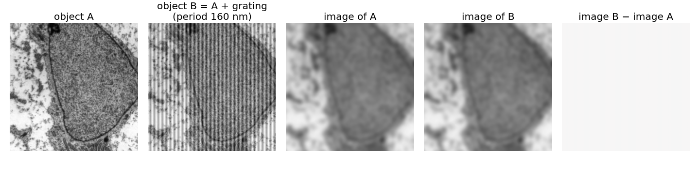
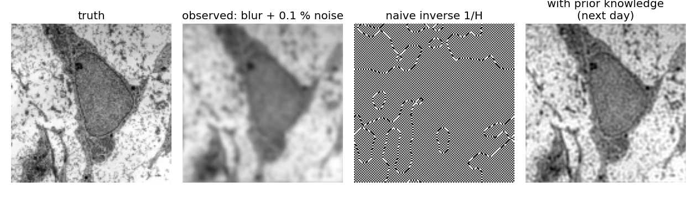

We know the forward model and the PSF. Can we get the object back from the image?
Undo the blur by dividing by the OTF: inverse filtering. Perfect without noise.
With noise it explodes where the OTF is small, and has nothing to divide beyond the cut-off.
Invisible objects: different objects can give exactly the same image.
Blur is a matrix; undoing it is solving a badly conditioned linear system: an ill-posed problem.
Slides titled The math give the formulas and proofs; the ideas are complete without them.
The question
The forward direction is well behaved: one object gives one image. The inverse problem runs it backwards: from the image (and the PSF) to the object.
Forward: object → blur → sample → add noise → image. Every step is known.
Backward: image → ? The blur averaged neighbours together; the noise added something we do not know.
Is there one object that explains the image? Can we find it? Does a tiny change in the image make a tiny change in the answer?
Divide by H
In frequency space the blur is a multiplication: G = F \cdot H. So divide: \hat F = G / H. This is inverse filtering.
Without noise, and where H \ne 0: \hat F = FH/H = F, exactly the object.
Each frequency is multiplied by the gain1/H: weakly transmitted frequencies are amplified strongly.
OTF H
1
0.5
0.1
0.01
gain 1/H
1
2
10
100
1 % noise becomes
1 %
2 %
10 %
100 %
With noise
The image is G = FH + N. Dividing:
\hat F = \frac{G}{H} = F + \frac{N}{H}.
The noise is spread over all frequencies, about equally (white noise). The signal is not: at high frequencies FH is tiny.
Where H is small, N/H is huge: the restored image is dominated by amplified noise at the finest frequencies.
Small example. The blur (1, 2, 1)/4 multiplies the three waves of the frequency unit (constant, period 4 pixels, period 2 pixels) by 1, 0.5, 0. The inverse multiplies them by 1, 2, ∞. Noise at period 4 doubles; noise at period 2 cannot be divided at all.
Try it: the inverse filter
Invisible objects

Object B is object A plus a grating of period 160 nm, finer than the cut-off of an NA 1.4 objective (λ/2NA = 186 nm). Their images are identical.
A grating finer than the cut-off gives exactly the same image as no grating at all (H = 0 there).
So adding it to any object changes nothing in the image: the data cannot tell these objects apart.
No method can recover what the optics never transmitted. A restoration that shows such detail has invented it.
Ill-posed
A problem is well-posed if an answer exists, is unique, and depends stably on the data. Deblurring fails all three:
Existence: noise puts energy at frequencies where H = 0; no object, blurred, gives exactly that image.
Uniqueness: invisible objects can be added freely.
Stability: a tiny change in the image (noise of 0.1 %) changes the answer enormously (gains of 10^9).
The forward model alone does not determine the object. Something else must.
The math: blur is a circulant matrix
On a periodic 1D signal of n pixels, blur by a kernel is \mathbf g = A\mathbf f with a circulant matrix: each row is the kernel shifted by one. For (1, 2, 1)/4 and n = 4:
Every circulant matrix has the Fourier waves\mathbf w_k = (e^{2\pi i k j/n})_j as eigenvectors, with eigenvalues H(k), the DFT of the kernel. Here H = (1, 0.5, 0, 0.5) for k = 0, 1, 2, 3.
So the convolution theorem is the diagonalisation A = W^{-1}\,\mathrm{diag}(H)\,W (the DFT is a change of basis).
For a symmetric kernel A is symmetric; its singular values are |H(k)|. Condition number: \kappa(A) = \frac{\max_k |H(k)|}{\min_k |H(k)|} = \frac{1}{\min_k |H(k)|}, infinite as soon as some H(k) = 0 (this A is singular: \mathbf w_2 = (1, -1, 1, -1) is in its null space).
The math: ill-posedness
Hadamard (1902): a problem is well-posed if a solution exists, is unique, and depends continuously on the data.
For \mathbf g = A\mathbf f: the null space of A (the waves with H(k) = 0; for a lens, all frequencies past 2\mathrm{NA}/\lambda) can be added to any solution: not unique. Data with a component outside the range of A have no exact solution.
Stability: for A(\mathbf f + \delta\mathbf f) = \mathbf g + \delta\mathbf g with invertible A, \frac{\|\delta\mathbf f\|}{\|\mathbf f\|} \le \kappa(A)\,\frac{\|\delta\mathbf g\|}{\|\mathbf g\|}. A relative error of 10^{-3} in the image can become 10^{-3}\kappa in the object.
Two-pixel blurs: \begin{bmatrix}0.75 & 0.25\\0.25 & 0.75\end{bmatrix} has eigenvalues 1 (sum) and 0.5 (difference), \kappa = 2; \begin{bmatrix}0.55 & 0.45\\0.45 & 0.55\end{bmatrix} has 1 and 0.1, \kappa = 10. An error of 0.01 in the difference grows to 0.02 and to 0.1.
What must we add?

The same blurred image (Gaussian σ = 1.5 px, 0.1 % noise) restored two ways.
The data alone cannot decide. Restoration only works if we add what we know:
about the object: it is smooth, or mostly piecewise constant, and never negative;
about the noise: how large it is, and what kind (Poisson, Gaussian).
Tomorrow (the deconvolution day): how to add it, and how to choose how much.
Other forward models
The same diagnosis appears whenever we measure something through an instrument:
Tomography (the Radon elective): the forward model takes line integrals instead of a convolution with a PSF; reconstructing the object from them is ill-posed in the same way.
Missing frequencies, small gains and noise: the vocabulary of today carries over.
Summary
Inverse problem: from the image back to the object. Inverse filter: \hat F = G/H.
Without noise and with H \ne 0: exact. With noise: \hat F = F + N/H explodes where H is small.
Beyond the cut-off H = 0: invisible objects; nothing can bring them back.